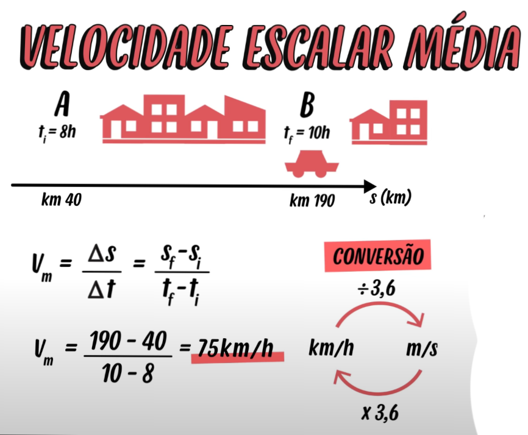
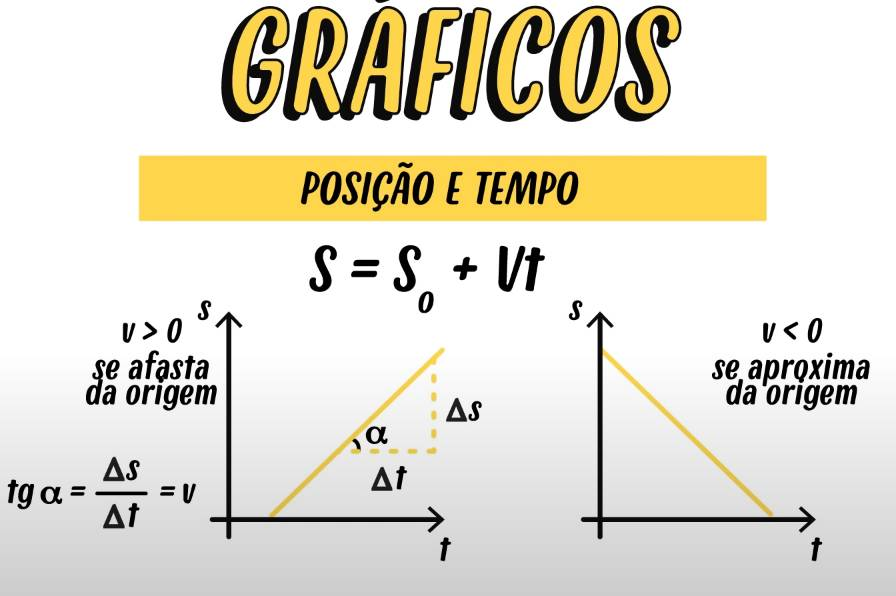
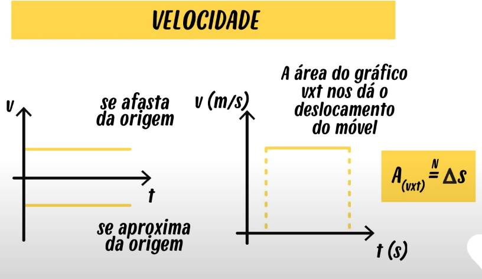
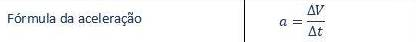
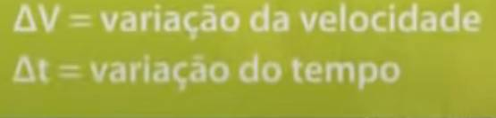
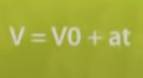
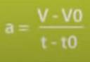
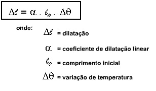
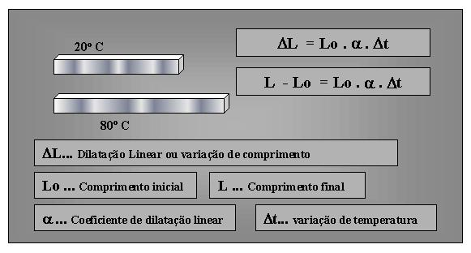
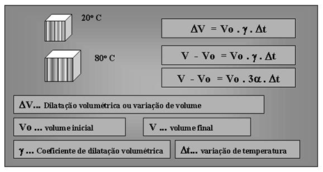

1ºBimestre
MRU (Movimento Retilíneo Uniforme)
Movimento está associado à variação da posição,famoso deslocamento ou Δs. Retilíneo quer dizer estritamente linha reta, ou seja, o móvel não percorre um círculo ou uma curva. E uniforme significa que a velocidade escalar é constante sempre, que não muda. Vai ter sempre o mesmo valor.
exemplo de como calcular velocidade escalar média

Representações Gráficas
 
MRUV (Movimento Retilíneo Uniformemente Variado)
Quando não tem velocidade constante, ele e variando, isso acontence quando a velocidade aumenta ou diminui. Quando a velocidade varia é porque o corpo acelera ou freia, que vem o conceito de aceleração, que vai medir o quão rápido vai variar a velocidade. Quanto menos tempo demorar pra velocidade mudar maior vai ser a aceleração.
Funções e Formulas
   
2ºBimestre
Dilatação Térmica
Todos os corpos sejam eles sólidos, líquidos ou gasosos eles se dilatam ou se contraem dependendo da variação de temperatura sofrida quando a variação de temperatura é positiva ou seja o corpo ganha calor e aumenta sua temperatura as moléculas que constituem o corpo se agitam mais essa agitação molecular faz com que o corpo aumente as suas dimensões esse aumento é chamado de dilatação se a gente resfriar o corpo a gente vai diminuir a agitação das moléculas que a gente vai causar o corpo uma contração então nos podemos ter a dilatação ou a contração isso depende da variação de temperatura se a dilatação linear for positiva significa que o corpo aumentou o seu tamanho se a dilatação linear for negativa significa que o corpo diminui o seu tamanho.

Dilatação Superficial
Todos os corpos existentes na natureza sejam eles sólidos, líquidos ou gasosos, sofrem variação na sua área quando submetidos a diferentes variações de temperatura, se a variação de temperatura sofrida pelo corpo for positiva esse corpo irá aumentar as suas dimensões, se a variação de temperatura for negativa ele vai diminuir as suas dimensões, isso devido ao fato de os corpos serem constituidas de moléculas, quando aquecidas essas moléculas vibram mas fazendo com que as dimensões do corpo aumentem, quando resfriados essas moléculas vibram menos fazendo com que as dimensões dos corpos diminui.

Dilatação Volumétrica
Todos os corpos sejam eles sólidos,líquidos ou gasosos são constituídos de moléculas, e essas moléculas ao serem aquecidas ou resfriadas agitam mais ou menos, quando aquecemos um corpo nós temos as suas moléculas agitando de uma maneira mais intensa essa agitação faz com que elas fiquem mais espaçadas, e as dimensões do corpo aumenta se nós resfriamos um corpo nós diminuímos a agitação das moléculas fazendo com que elas fiquem mais próximas, assim diminuindo as dimensões do corpo quando as dimensões aumentam nós chamamos de dilatação térmica,quando elas diminuam em contração técnica.

Dilatação de Líquidos
Os líquidos diferentes dos sólidos não têm uma forma definida, então fica meio sem sentido se nós falarmos sobre a dilatação linear e dilatação superficial, devemos falar então da dilatação volumétrica, só que para estudar a dilatação volumétrica de um líquido, nós precisamos colocar dentro de um recipiente, e aí temos que levar em conta a dilatação do recipiente também. Um recipiente com líquido até completar totalmente o seu volume começamos aquecer , esse recipiente com o líquido, a parte que transbordou do líquido é a dilatação transparente do líquido, para descobrir dilatação real leva em conta as duas dilatação, a sofrida pelo recipiente e a aparente.